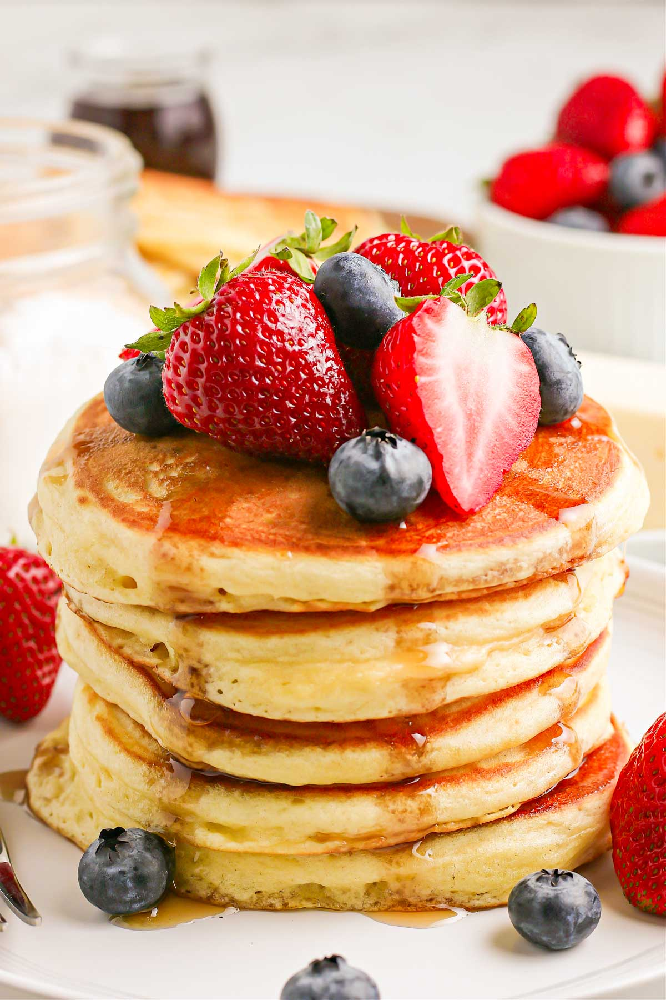

In a large mixing bowl, sift the flour, sugar and baking powder. Give it a little whisk.
Next, add your butter to a separate mixing bowl and microwave for 20 seconds or so until just melted. Add your vanilla, eggs and milk to your butter mixture and stir to combine. Add fresh lemon zest if using.
Add the wet mixture to the dry mixture and gently fold through. The mixture should be nice and thick.
Heat a small frying pan on a medium-low heat, add a little butter to the pan and pour over 3 heaped tablespoons or so of pancake batter. Heat for 1-2 minutes or until golden brown and then flip.
Heat on the opposite side for about 1 minute or until also golden. Remove from heat and set aside. Repeat with remaining pancake batter and butter.
Serve pancakes immediately with maple syrup and fresh raspberries.
Butter - If you use unsalted butter, add 1/4 teaspoon salt to the batter.
